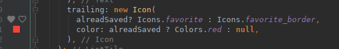

24 Jun 2018 , tagged: First Impression, Flutter, Android, Dart
First Impressions of Flutter
Google recently announced availability of 1.0 preview of Flutter, a new framework for building mobile apps, written from scratch with performance and beautiful UIs in mind. I’ve always been interested in building apps for mobile devices in general and Android in particular thanks to the number of Android devices I own, but was always discouraged by the complexity of building Android apps. I have one on the Android store that got too unwieldy to work on and I eventually had to cease development due to time constraints. Now with flutter closing in on its first release build I got interested, not only because it is a new beginning to building mobile apps – and we all know that developers love newly built things – but also because it uses Dart, Googles attempt to create a language to replace JavaScript that, sadly, went not far.
But lets get into it. This is as much my first impressions of Flutter as it is of Dart. Here are things I took note of when working through the flutter tutorial:
- It comes with a formatter! To some that might be rather boring but to me its a big deal. If a language comes with a tool that lets me format files out of the box I’m very happy. Well formatted code is easier to read than badly formatted code and consistently formatted code is better than inconsistent formatting. A formatter solves both these problems.
- Hot reloading of apps makes tweaking UIs a breeze! I remember building Android UIs being excruciatingly slow.
- In Flutter even alignments are widgets and not properties of a widget. Interesting.
- I like Dart so far. It has fat-arrow functions and it’s syntax reminds a bit of Ruby and its blocks. I like how it lends itself to describing UI structures. I particularly like that it is an OOP language where I can send messages to ints or booleans.
- Dart’s package repository is nice.
- I love how the IntelliJ plugin shows a little preview of icons and colours in the sidebar: 
I quite enjoyed building the little list generator app from the tutorial. I like how Dart’s code is more concise than plain Java (seriously, the amount of boiler plate code in Android apps always turned me off) and how quickly I was able to build a decent looking app within an hour or two. Now I really want to build a mobile app, maybe I should revive my old app using Flutter?